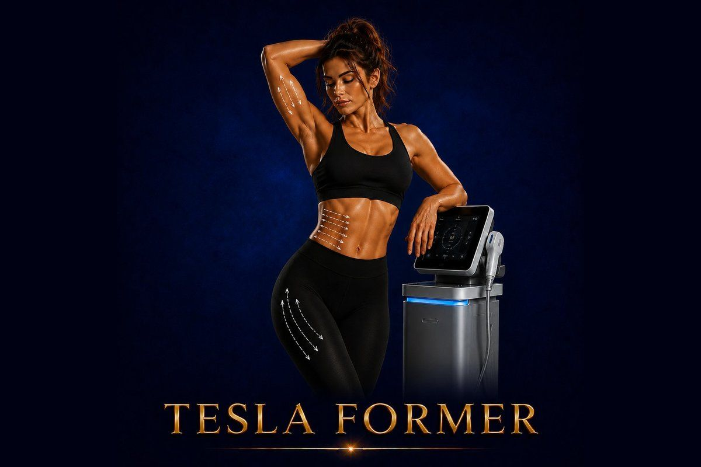

Body Shaping
Build muscle. Burn fat. Sculpt your body — in 30 minutes, with zero effort.
✓ Full medical content — verified for SEO and patient information.

About
Tesla Former is an advanced body sculpting device that uses Functional Magnetic Stimulation (FMS) technology to make muscles contract intensively — far beyond what voluntary exercise can produce. In a single 30-minute session, Tesla Former triggers around 50,000 supramaximal muscle contractions in the targeted area. These contractions force the muscles to adapt and rebuild stronger, denser, and more defined — while simultaneously stimulating fat metabolism in the surrounding tissue. The result is the same biological effect as months of intense workout, condensed into a series of 30-minute sessions. Tesla Former is non-invasive, completely needle-free, and requires zero effort from the patient. You simply lie down on the device's chair-or-bed setup, and the magnetic stimulation does the work. There's no pain, no sweating, no clothes to change, and no recovery time. The technology is comparable to EMSculpt and is widely used in Europe and the Middle East as a premium body sculpting solution.
Why It Works
The Process
A Tesla Former session at Hollywood Clinic typically takes 30 minutes: 1
Consultation & assessment Your doctor evaluates your body composition, muscle tone, and goals — and determines the right protocol (intensity, area, number of sessions). 2
Positioning You lie down comfortably (or sit, for arm and thigh work)
The Tesla Former applicator is positioned over the target muscle group — abdomen, glutes, arms, thighs, etc. 3
Magnetic stimulation The device delivers Functional Magnetic Stimulation to the targeted muscle group
You'll feel intense muscle contractions — strong and unusual, but not painful
The intensity is gradually increased over the session based on your tolerance. 4
Cooldown phases The protocol alternates between intense contraction phases and brief recovery phases — mimicking the structure of high-intensity interval training (HIIT), but with vastly more muscle activation. 5
Session end After 30 minutes, the session ends
You may feel like you've completed an intense workout — your muscles feel worked — but you're fully clothed, dry, and ready to leave
10 sessions, performed 2–3 times per week
2 months help preserve results long-term
Who It's For
Safety First
Quality You Can Trust
Treatment Comparisons
Clatuu Alpha targets fat only — it freezes and permanently destroys fat cells, but does nothing for muscle. Tesla Former builds muscle AND reduces fat in the same area. Best combination: Clatuu Alpha to eliminate stubborn fat pockets, then Tesla Former to add muscle definition underneath.
Body FX uses RF + vacuum + electrical pulses for fat reduction and skin tightening. Tesla Former focuses on muscle building. They address completely different goals — body shape (Body FX) vs. muscle definition (Tesla Former). Used together they create comprehensive sculpting.
EMTONE is designed for cellulite reduction and surface skin smoothing. Tesla Former is for muscle building and deeper sculpting. They're often combined in a complete program — Tesla Former for the muscle, EMTONE for the surface.
The gym uses voluntary muscle activation — typically activating 30–40% of muscle fibers per exercise. Tesla Former produces near-100% activation through supramaximal contractions. It's not a replacement for the gym for cardiovascular fitness or athletic performance — but for pure muscle building and definition in specific areas, it's significantly more efficient per minute.
BBL is surgery — fat transferred from other body areas to the glutes for dramatic shape change. Tesla Former is non-surgical — it lifts and tones the glutes through muscle building. Different goals: BBL for volume change, Tesla Former for shape and tone without surgery.
Investment
Tesla Former
The price of a Tesla Former session at Hollywood Clinic is set after a free consultation and depends on: Treatment area — abdomen, glutes, arms, thighs, or multiple areas.
Final pricing is determined after a free consultation, because every case is different.
Book Free ConsultationWhy Hollywood Clinic
Dr. Sara Abdelhameed — Clinical Nutrition Consultant & Body Contouring Specialist, 12+ years of experience, 50,000+ women treated. The most experienced body contouring authority at Hollywood Clinic — ideal for structured Tesla Former protocols combined with nutrition guidance
Dr. Rana Ibrahim Sultan — Clinical Nutritionist & Non-Invasive Aesthetic Specialist. Excellent at integrating Tesla Former into comprehensive non-invasive body plans
Dr. Ehssan Rabie — Clinical Nutrition Specialist, 13 years at Kasr Al-Ainy. Ideal for medically-grounded body sculpting plans where Tesla Former is part of a wider metabolic and physical strategy
FAQ